Interactive
Spice World
What can these seven spices add to your life?
Spices add new flavours without adding sodium, fat, or calories. They’re also believed to have significant health benefits. Each spice below can add new flavours and vibrancy to your meals. Click through each thumbnail to learn about what these spices have to offer.
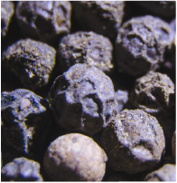
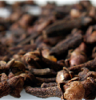
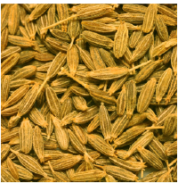
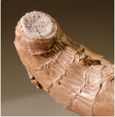
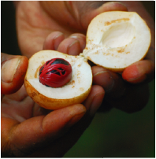
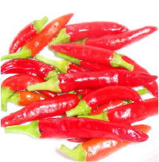
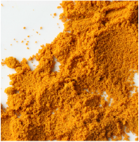
Black Pepper
The most commonly used spice worldwide, black pepper, is native to India. People use black pepper for arthritis, asthma, upset stomach, gas, and headaches.Black pepper contains a chemical called piperine which seems to have many effects on
the body. Piperine seems to reduce pain, improve breathing, and reduce inflammation.
Cinnamon
Cinnamon is actually the bark of an evergreen tree found in southeastern Asia.People use cinnamon for diabetes, muscle and stomach spasms, infections, and the common
cold.
Cloves
Cloves are the opened flower buds of trees found in Indonesia, Sri Lanka, Madagascar, Tanzania, and Brazil.They are a natural anesthetic, and antiseptic. Cloves are used for upset stomach,
diarrhea, bad breath, and improving oral health. Cloves contain a chemical that may
decrease pain.
Cumin
Cumin is the seed of a small plant in the parsley family.Its use goes back 5000 years to the Egyptians, who used it not only as a spice but as
an ingredient in the mummification process.
Ginger
Ginger comes from the roots of the ginger plant found in parts of Asia. Ginger is used for motion sickness, irritable bowel syndrome, nausea, loss of appetite, and back pain.Ginger contains chemicals that may reduce nausea and inflammation.Right now, researchers believe these chemicals work primarily in the stomach and
intestines, but they may also work on the brain and nervous system to control nausea.
Nutmeg
Nutmeg originates from the seed of a tree in the Banda Islands of Indonesia, Malaysia and the Caribbean.Notable: Nutmeg is used for trouble sleeping (insomnia), removing pain in your mouth,
and toothaches.
Capsicum
Capsicum is the source of various sweet peppers and chilli peppers (think cayenne pepper).Capsicum is used to clear the sinuses, eliminate toxins from the body, and improve
weight loss.
Turmeric
Turmeric is found in Indian and Caribbean cuisines. Turmeric is used to reduce high cholesterol, as an anti inflammatory, and as an aid to digestionTurmeric contains the ingredient curcumin which decreases swelling.
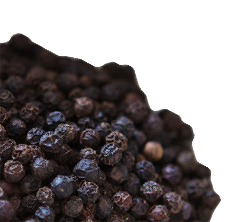
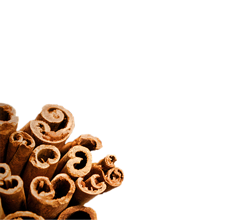
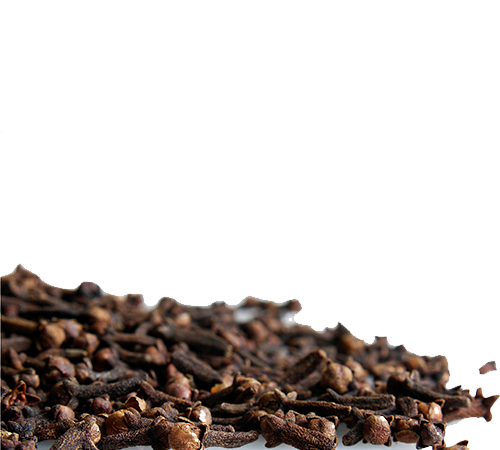
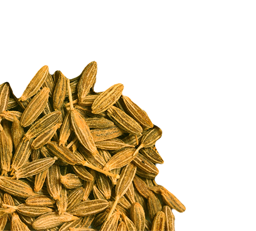
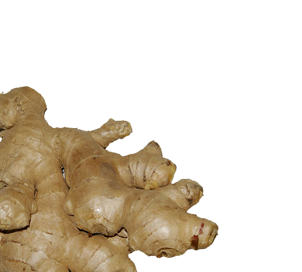
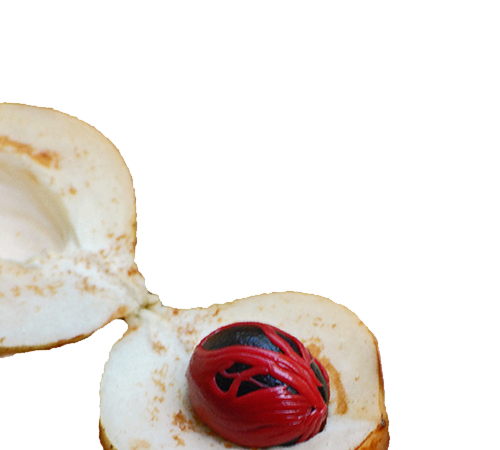
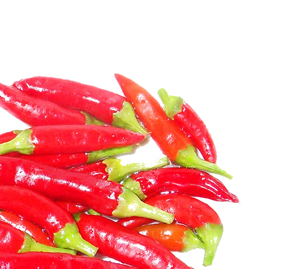
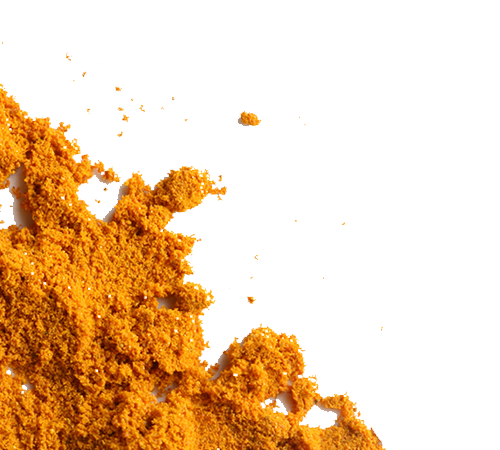